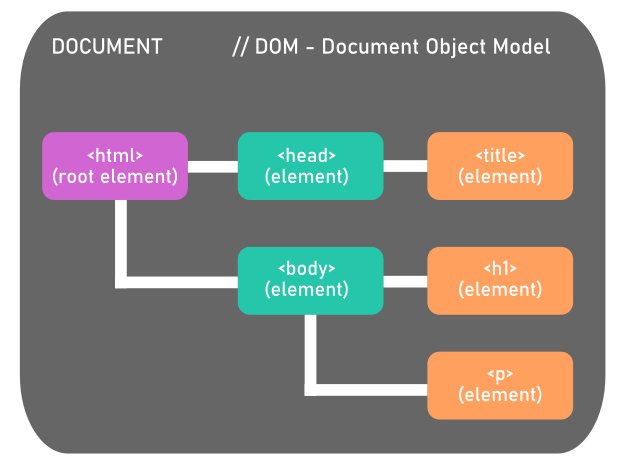
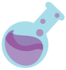
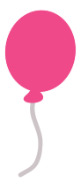

Qu'est-ce que le DOM ?
> Quand un document HTML est chargé dans le navigateur, il devient un objet manipulable > C'est aussi un noeud racine (root node) qui lui-même contient d'autres éléments manipulables (les balises h, p, a, Etc) > head et body sont également des noeuds > On peut ainsi changer une syntaxe, un texte, une valeur, une image...bref, tout ! CSS compris
Sélectionner & modifier des éléments
◄ ◄ Voici quelques exemples ...Et une preuve plus concrète par ici ◄
Les écouteurs d'événements | Event Listener
Ils permettent d'agir avec les actions des utilisateurs (click sur un bouton par exemple) On utilise // addEventListener Il existe : - Les événements souris (MouseEvent : mousedown, mouseup, click, dblclick, mousemove, etc) - Les événements tactiles (ToucheEvent : touchstart, touchmove, ...) --> uniquement pour smartphones et tablettes - Les événements clavier (KeyboardEvent : keydown, keypress, ... ) - Les événements de page (focus, blur, change, submit, ...) - Les événements fenêtre (scroll, resize, load, etc) A noter qu'il est possible de prévoir 2 événements selon la détection du support (réaction tactile ou souris) ou via des libraries : > FastClick > Detect-it > Modernizr
Des ressources d'événements > par iciBloquer des événements
...Certaines actions peuvent être stoppées. Ceci afin d'empêcher des clicks accidentels par exemple // preventDefautl() // stopPropagation() sont des possibilités. Passons désormais à l'action ! > Une démo vaut mille mots